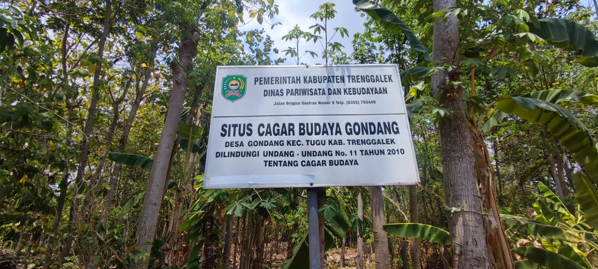

Situs Gondang merupakan bangunan kuno bersejarah yang menjadi saksi bisu peradaban masa lampau di wilayah Trenggalek, Jawa Timur. Keberadaannya baru terungkap pada tahun 2018 ketika warga sekitar menemukan beberapa arca di lokasi tersebut. Penemuan ini memicu keingintahuan para arkeolog dan sejarawan, yang kemudian melakukan ekskavasi pertama pada tahun 2022 dan dilanjutkan dengan ekskavasi kedua pada tahun 2023. Rangkaian penggalian ini bertujuan untuk mengungkap lebih banyak informasi tentang struktur dan fungsi bangunan kuno ini.
Situs Gondang berlokasi strategis di depan salah satu rumah warga di Desa Gondang, Kecamatan Tugu, Kabupaten Trenggalek. Keunikan situs ini terletak pada lokasinya yang relatif dekat dengan pusat kota, hanya berjarak 7,5 km atau sekitar 13 menit perjalanan.
Meskipun demikian, situs ini cukup tersembunyi karena berada di pekarangan rumah warga dan harus diakses melalui gang sempit di antara pemukiman penduduk. Untuk mencapainya, pengunjung perlu berjalan kurang dari 1 km ke arah selatan dari pasar Gondang Tugu.
Hasil penggalian arkeologis mengungkapkan bahwa candi ini memiliki dimensi 5,80 x 5,80 meter, dengan struktur yang tidak tertanam terlalu dalam dari permukaan tanah. Sayangnya, bangunan ini tidak lagi utuh dan hanya menyisakan bagian kaki candi. Struktur yang tersisa terdiri dari susunan batu bata berbentuk bujur sangkar dengan ketebalan 8 cm. Berdasarkan bahan penyusun dan teknik konstruksinya, para ahli memperkirakan bahwa candi ini dibangun pada era Mataram Kuno, sekitar abad ke-10 Masehi.
Penemuan beberapa arca di lokasi ini semakin memperkaya nilai arkeologis dan historis Situs Gondang. Di antara temuan penting tersebut adalah arca Agastya, arca Mahakala, dan arca Apsari. Keberadaan arca-arca ini menjadi bukti kuat bahwa candi ini dulunya berfungsi sebagai tempat pemujaan Dewa Siwa, salah satu dewa utama dalam pantheon Hindu. Hal ini memberikan gambaran tentang kehidupan keagamaan dan spiritual masyarakat Jawa Kuno di wilayah Trenggalek pada masa itu.
Berikut adalah lokasi dari situs Gondang